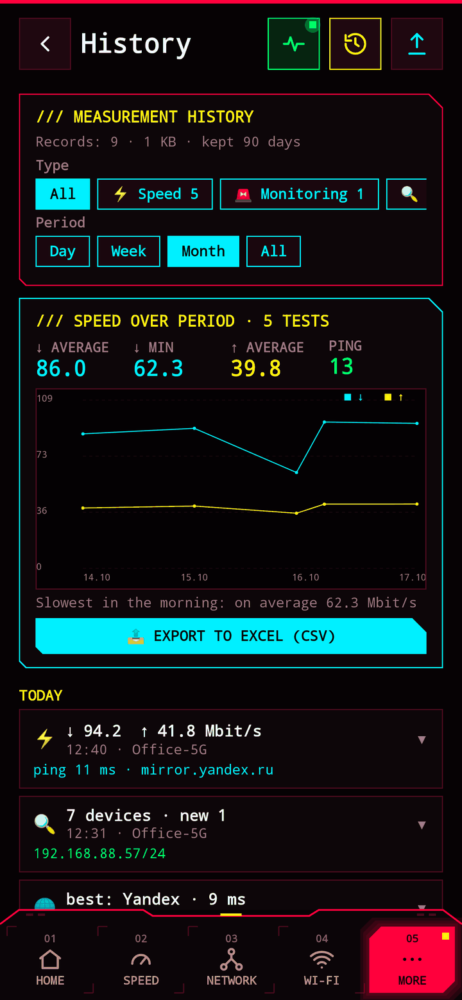
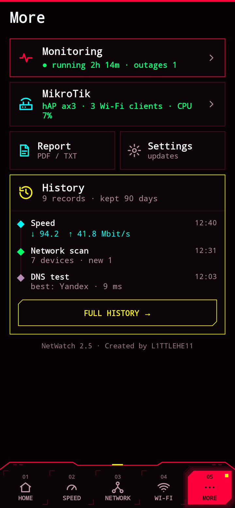

Free network scanner and Wi-Fi analyzer for Android
Finds every device on your network, picks the best Wi-Fi channel, tests your speed, catches ISP outages and shows what is going on inside your MikroTik. No ads, no data collection, open source.
FEATURES
Every device on the subnet in 10–30 seconds: routers, MikroTik, IP cameras, printers, Android TV and Smart TV, PCs, iPhones, NAS. Open ports, device names, a “new” tag.
All nearby networks on a 2.4 / 5 / 6 GHz channel graph and the least crowded channel for your access point.
Multi-threaded download and upload test with live bars, ping and jitter, history and a weekly summary: when your internet is slowest.
24/7 background checks of the router and the internet, outage notifications, loss statistics and downtime — evidence for your ISP.
Signal and ping measurements per location (“kitchen”, “2nd floor”), weak spots highlighted, Excel and PDF report.
Traceroute, DNS benchmark, port scanner with service names, live ping of any host, LAN TCP throughput test, Wake-on-LAN.
RouterOS API client: load, real-time traffic per port, CAPsMAN access points, Wi-Fi clients with signal, DHCP leases.
Every test is saved on the phone, filters by network and period, one-tap PDF report, home-screen widget.
SCREENSHOTS




HOW TO INSTALL
- Download NetWatch-2.5-universal.apk to your phone.
- Open the file and allow installs from this source.
- Allow location access — without it Android hides the Wi-Fi network name.
PRIVACY
NetWatch collects nothing and sends nothing anywhere. No analytics, no ads, no accounts, no servers of its own. All measurements stay on your phone.
Location is needed only because Android won’t reveal the network name and Wi-Fi scan results without it. Privacy policy.
LANGUAGES
The app speaks English and Russian and follows your system language; switch it in “More → Settings → Language”. Want to add yours? Help translate NetWatch.